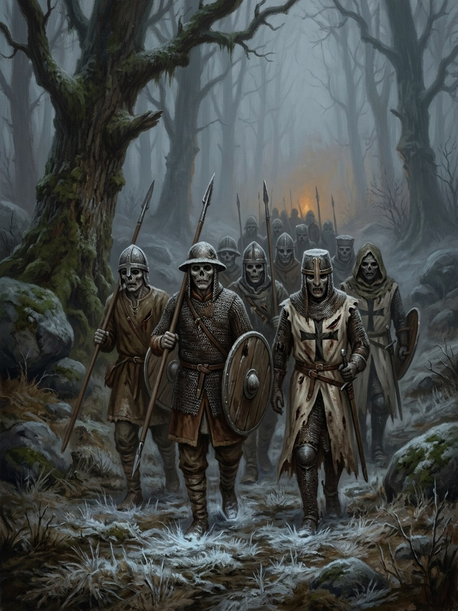

Nedegintieji (the Unburned)¶
Folk source [Historical record]¶
[The saga’s invention.] No folk source; it builds on the Baltic belief in dead who return because they were not properly buried and on the crusade-era practice of burying the slain in pits. See Alkanosios vėlės for the folk basis.
Nedegintieji (the Unburned)

Nedegintieji (the Unburned) · creature¶
Tipas |
būtybė |
Status |
Sagos išmonė |
Pastaba |
Bestiary §24. The saga’s invention. Danger IV after 1387. |
In the saga (where the folk are half-wrong)¶
The crusade dead: Lithuanians killed in Order raids and buried in pits rather than burned, and the Order’s own dead buried in pagan ground far from any church. With no fire to lift them, no kin to feed them, and a century of crusade fervour soaked into them, they rise in abandoned groves after 1387: hungry vėlės crossed with the Iron Saint’s appetite, so they march as well as hunger. Cold, silent, they walk in the formation they died in, pagan and Christian side by side, and take warmth hearth by hearth rather than eat.
Signs & habitat¶
Mass graves near old Reise routes; groves left untended; lines of frost-prints in a summer field; fires that will not catch after they pass.
Before / after the Unbinding¶
Before 1387 none (the Pact kept them in the ground). After: the commonest serious threat of Books II–V, at its height after Pabaiskas (1435) when the field holds thousands.
Banes, wards, bargains, and their cost¶
Fire: only cremation stops one for good (heresy, and a pit takes cartloads of wood and a day nobody can hide). Live ash in a ring holds them off (after 1430 there is no more live ash). Feed and name them, if anyone remembers the names.
Danger level¶
IV deadly (after 1387).
Story hooks¶
Book II: the first rising in a felled Šventaragis-side grove. Book V: Pabaiskas and the last hunt of the vilkatai.
Ryšiai
Servant of: Geležinis Šventasis (Ferrum Sanctum)
Shard of: Alkanosios vėlės (the hungry dead) — Crusade dead buried in pits, hungry dead with the Iron Saint’s appetite.
Origin [The saga's invention] the crusade dead: Lithuanians pit-buried by the Order, and the Order's own dead in pagan ground, risen after 1387
Tier Revenant · hungry vėlės crossed with the Iron Saint's appetite
Danger IV deadly (after 1387)
Habitat Mass graves near old Reise routes; abandoned groves
Wants Warmth, hearth to hearth. They do not eat
Takes Warmth: a village they pass through is left with fires that will not catch
Signs Lines of frost-prints in a summer field; groves left untended
Banes Fire (only cremation stops one for good); live ash in a ring
Half-wrong truth. There is no folk belief to be wrong: the nearest, that the unburied return, is right but small. These march as well as hunger. Cold and silent, they walk in the formation they died in, pagan and Christian side by side, still carrying their wounds.
Height. The commonest serious threat of Books II-V. After Pabaiskas (1435) the field holds thousands.
Taking warmth. They move from hearth to hearth.
Fire. Heresy, and a whole pit takes cartloads of wood and a day nobody can hide.
Live ash. After 1430 there is none.
Feeding and naming. If anyone remembers the names. No one does.
Sąsajos¶
graph LR
alkanosios_veles["Alkanosios vėlės (the hungry dead)"]
iron_saint["Geležinis Šventasis (Ferrum Sanctum)"]
nedegintieji["Nedegintieji (the Unburned)"]
nedegintieji -->|Shard of| alkanosios_veles
nedegintieji -->|Servant of| iron_saint
style nedegintieji stroke-width:3px